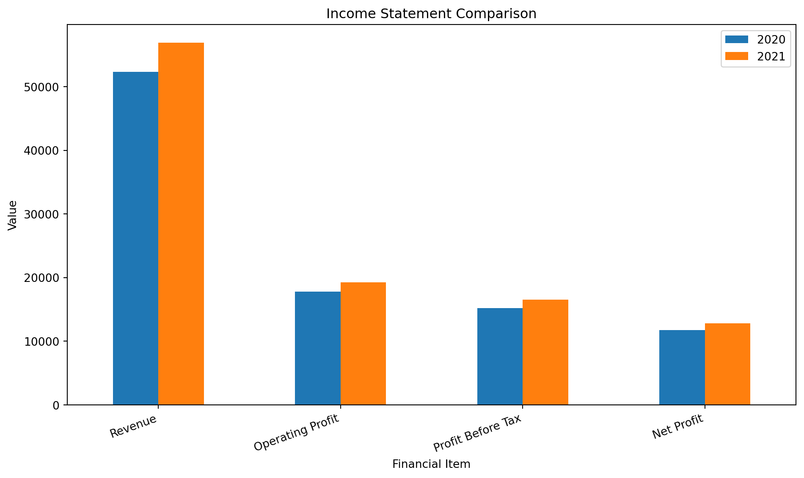
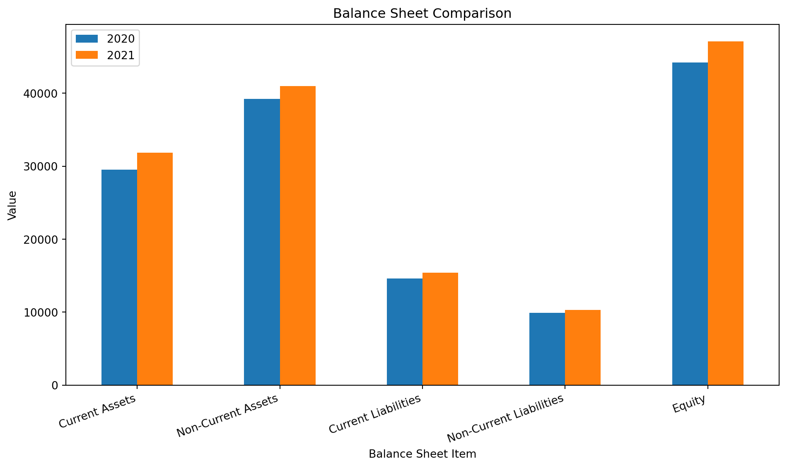
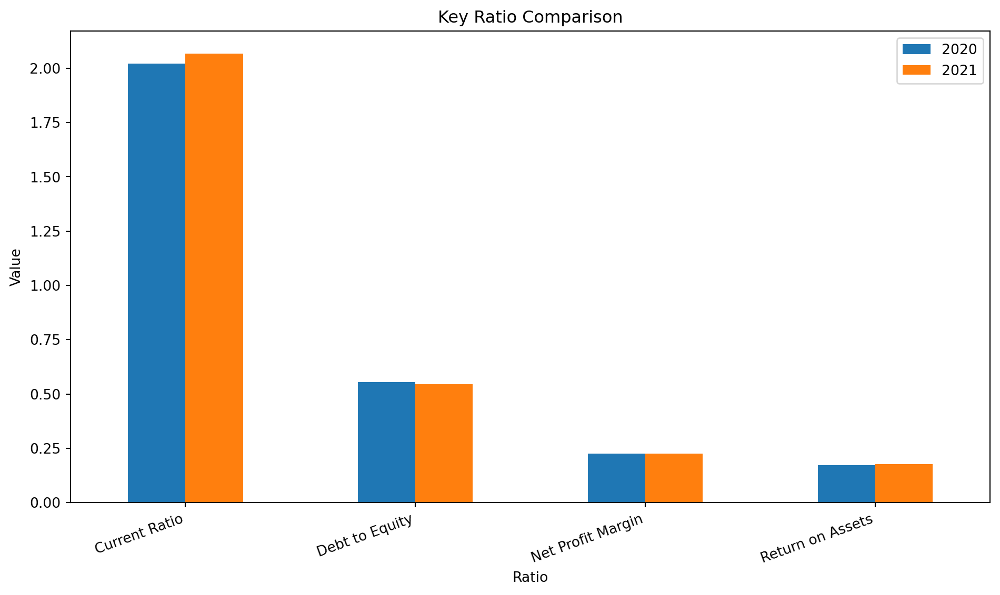

Code
import pandas as pd
import matplotlib.pyplot as plt
plt.rcParams["figure.figsize"] = (10, 6)
pd.set_option("display.float_format", lambda x: f"{x:,.2f}")Abel George Nibu
March 15, 2025
This project demonstrates how Python can be used to support financial statement analysis through a structured comparison of selected 2020 and 2021 values. It reflects the financial analysis theme in my academic project work and presents the approach in a portfolio-friendly format.
The dataset used in this page is an illustrative academic dataset created for portfolio demonstration. It is designed to show the analytical method clearly through executable Python code, comparative analysis, common-size analysis, and ratio calculations.1
The main goals of this project are to:
This project uses the following ideas:
\[ \text{Percentage Change} = \frac{\text{New Value} - \text{Old Value}}{\text{Old Value}} \times 100 \]
\[ \text{Common-Size Ratio} = \frac{\text{Statement Item}}{\text{Base Amount}} \times 100 \]
For the income statement, the base amount is Revenue.
For the balance sheet, the base amount is Total Assets.
income_statement = pd.DataFrame({
"Item": ["Revenue", "Operating Profit", "Profit Before Tax", "Net Profit"],
"2020": [52300, 17800, 15200, 11750],
"2021": [56900, 19250, 16540, 12820]
})
balance_sheet = pd.DataFrame({
"Item": [
"Current Assets",
"Non-Current Assets",
"Current Liabilities",
"Non-Current Liabilities",
"Equity"
],
"2020": [29500, 39200, 14600, 9900, 44200],
"2021": [31850, 40950, 15400, 10300, 47100]
})
income_statement| Item | 2020 | 2021 | |
|---|---|---|---|
| 0 | Revenue | 52300 | 56900 |
| 1 | Operating Profit | 17800 | 19250 |
| 2 | Profit Before Tax | 15200 | 16540 |
| 3 | Net Profit | 11750 | 12820 |
| Item | 2020 | 2021 | Absolute Change | % Change | |
|---|---|---|---|---|---|
| 0 | Revenue | 52300 | 56900 | 4600 | 8.80 |
| 1 | Operating Profit | 17800 | 19250 | 1450 | 8.15 |
| 2 | Profit Before Tax | 15200 | 16540 | 1340 | 8.82 |
| 3 | Net Profit | 11750 | 12820 | 1070 | 9.11 |
| Item | 2020 | 2021 | Absolute Change | % Change | |
|---|---|---|---|---|---|
| 0 | Current Assets | 29500 | 31850 | 2350 | 7.97 |
| 1 | Non-Current Assets | 39200 | 40950 | 1750 | 4.46 |
| 2 | Current Liabilities | 14600 | 15400 | 800 | 5.48 |
| 3 | Non-Current Liabilities | 9900 | 10300 | 400 | 4.04 |
| 4 | Equity | 44200 | 47100 | 2900 | 6.56 |
income_common_size = income_statement.copy()
income_common_size["2020 Common Size %"] = (
income_common_size["2020"] / income_common_size.loc[income_common_size["Item"] == "Revenue", "2020"].iloc[0] * 100
).round(2)
income_common_size["2021 Common Size %"] = (
income_common_size["2021"] / income_common_size.loc[income_common_size["Item"] == "Revenue", "2021"].iloc[0] * 100
).round(2)
income_common_size[["Item", "2020 Common Size %", "2021 Common Size %"]]| Item | 2020 Common Size % | 2021 Common Size % | |
|---|---|---|---|
| 0 | Revenue | 100.00 | 100.00 |
| 1 | Operating Profit | 34.03 | 33.83 |
| 2 | Profit Before Tax | 29.06 | 29.07 |
| 3 | Net Profit | 22.47 | 22.53 |
total_assets_2020 = balance_sheet.loc[balance_sheet["Item"].isin(["Current Assets", "Non-Current Assets"]), "2020"].sum()
total_assets_2021 = balance_sheet.loc[balance_sheet["Item"].isin(["Current Assets", "Non-Current Assets"]), "2021"].sum()
balance_common_size = balance_sheet.copy()
balance_common_size["2020 Common Size %"] = (balance_common_size["2020"] / total_assets_2020 * 100).round(2)
balance_common_size["2021 Common Size %"] = (balance_common_size["2021"] / total_assets_2021 * 100).round(2)
balance_common_size[["Item", "2020 Common Size %", "2021 Common Size %"]]| Item | 2020 Common Size % | 2021 Common Size % | |
|---|---|---|---|
| 0 | Current Assets | 42.94 | 43.75 |
| 1 | Non-Current Assets | 57.06 | 56.25 |
| 2 | Current Liabilities | 21.25 | 21.15 |
| 3 | Non-Current Liabilities | 14.41 | 14.15 |
| 4 | Equity | 64.34 | 64.70 |
ratios = pd.DataFrame({
"Ratio": [
"Current Ratio",
"Debt to Equity",
"Net Profit Margin",
"Return on Assets"
],
"2020": [
29500 / 14600,
(14600 + 9900) / 44200,
11750 / 52300,
11750 / total_assets_2020
],
"2021": [
31850 / 15400,
(15400 + 10300) / 47100,
12820 / 56900,
12820 / total_assets_2021
]
})
ratios["2020"] = ratios["2020"].round(3)
ratios["2021"] = ratios["2021"].round(3)
ratios| Ratio | 2020 | 2021 | |
|---|---|---|---|
| 0 | Current Ratio | 2.02 | 2.07 |
| 1 | Debt to Equity | 0.55 | 0.55 |
| 2 | Net Profit Margin | 0.23 | 0.23 |
| 3 | Return on Assets | 0.17 | 0.18 |



This project shows how Python can support financial statement interpretation in a clear and reproducible way. By combining comparative statements, common-size analysis, ratio analysis, and charts, the project demonstrates a practical approach to understanding financial performance trends.
The numerical values in this page are illustrative and used only to demonstrate analysis workflow and presentation.↩︎
---
title: "Analyzing Financial Performance: A Comprehensive Study of ITC"
description: "A Python-based financial analysis project that compares selected 2020 and 2021 statement items using comparative statement, common-size statement, and ratio analysis techniques."
author: "Abel George Nibu"
date: "2025-03-15"
image: ../../images/project-itc.jpg
categories:
- Financial Analysis
- Business Analytics
- Python
page-layout: article
toc: true
format:
html:
code-tools: true
code-fold: show
---
## Project overview
This project demonstrates how Python can be used to support **financial statement analysis** through a structured comparison of selected 2020 and 2021 values. It reflects the financial analysis theme in my academic project work and presents the approach in a portfolio-friendly format.
::: {.callout-note}
## Data note
The dataset used in this page is an **illustrative academic dataset** created for portfolio demonstration. It is designed to show the analytical method clearly through executable Python code, comparative analysis, common-size analysis, and ratio calculations.[^note]
:::
## Objectives
The main goals of this project are to:
- compare selected financial statement items across two years
- calculate absolute and percentage changes
- prepare a common-size style interpretation
- calculate key financial ratios
- communicate findings using tables and charts
## Analytical approach
This project uses the following ideas:
$$
\text{Percentage Change} = \frac{\text{New Value} - \text{Old Value}}{\text{Old Value}} \times 100
$$
$$
\text{Common-Size Ratio} = \frac{\text{Statement Item}}{\text{Base Amount}} \times 100
$$
For the income statement, the base amount is **Revenue**.
For the balance sheet, the base amount is **Total Assets**.
## Python setup
```{python}
#| label: setup
#| message: false
#| warning: false
import pandas as pd
import matplotlib.pyplot as plt
plt.rcParams["figure.figsize"] = (10, 6)
pd.set_option("display.float_format", lambda x: f"{x:,.2f}")
```
## Create the financial dataset
```{python}
#| label: create-financial-data
#| echo: true
income_statement = pd.DataFrame({
"Item": ["Revenue", "Operating Profit", "Profit Before Tax", "Net Profit"],
"2020": [52300, 17800, 15200, 11750],
"2021": [56900, 19250, 16540, 12820]
})
balance_sheet = pd.DataFrame({
"Item": [
"Current Assets",
"Non-Current Assets",
"Current Liabilities",
"Non-Current Liabilities",
"Equity"
],
"2020": [29500, 39200, 14600, 9900, 44200],
"2021": [31850, 40950, 15400, 10300, 47100]
})
income_statement
```
## Income statement comparison
```{python}
#| label: income-comparative-analysis
#| echo: true
income_comparative = income_statement.copy()
income_comparative["Absolute Change"] = income_comparative["2021"] - income_comparative["2020"]
income_comparative["% Change"] = (
income_comparative["Absolute Change"] / income_comparative["2020"] * 100
).round(2)
income_comparative
```
## Balance sheet comparison
```{python}
#| label: balance-comparative-analysis
#| echo: true
balance_comparative = balance_sheet.copy()
balance_comparative["Absolute Change"] = balance_comparative["2021"] - balance_comparative["2020"]
balance_comparative["% Change"] = (
balance_comparative["Absolute Change"] / balance_comparative["2020"] * 100
).round(2)
balance_comparative
```
## Common-size income statement
```{python}
#| label: common-size-income
#| echo: true
income_common_size = income_statement.copy()
income_common_size["2020 Common Size %"] = (
income_common_size["2020"] / income_common_size.loc[income_common_size["Item"] == "Revenue", "2020"].iloc[0] * 100
).round(2)
income_common_size["2021 Common Size %"] = (
income_common_size["2021"] / income_common_size.loc[income_common_size["Item"] == "Revenue", "2021"].iloc[0] * 100
).round(2)
income_common_size[["Item", "2020 Common Size %", "2021 Common Size %"]]
```
## Common-size balance sheet
```{python}
#| label: common-size-balance
#| echo: true
total_assets_2020 = balance_sheet.loc[balance_sheet["Item"].isin(["Current Assets", "Non-Current Assets"]), "2020"].sum()
total_assets_2021 = balance_sheet.loc[balance_sheet["Item"].isin(["Current Assets", "Non-Current Assets"]), "2021"].sum()
balance_common_size = balance_sheet.copy()
balance_common_size["2020 Common Size %"] = (balance_common_size["2020"] / total_assets_2020 * 100).round(2)
balance_common_size["2021 Common Size %"] = (balance_common_size["2021"] / total_assets_2021 * 100).round(2)
balance_common_size[["Item", "2020 Common Size %", "2021 Common Size %"]]
```
## Key financial ratios
```{python}
#| label: key-ratios
#| echo: true
ratios = pd.DataFrame({
"Ratio": [
"Current Ratio",
"Debt to Equity",
"Net Profit Margin",
"Return on Assets"
],
"2020": [
29500 / 14600,
(14600 + 9900) / 44200,
11750 / 52300,
11750 / total_assets_2020
],
"2021": [
31850 / 15400,
(15400 + 10300) / 47100,
12820 / 56900,
12820 / total_assets_2021
]
})
ratios["2020"] = ratios["2020"].round(3)
ratios["2021"] = ratios["2021"].round(3)
ratios
```
## Visual comparison of key income statement items
```{python}
#| label: fig-income-comparison
#| fig-cap: "Comparison of selected income statement items for 2020 and 2021."
#| echo: true
income_plot = income_statement.set_index("Item")
ax = income_plot.plot(kind="bar")
ax.set_title("Income Statement Comparison")
ax.set_xlabel("Financial Item")
ax.set_ylabel("Value")
plt.xticks(rotation=20, ha="right")
plt.tight_layout()
plt.show()
```
## Visual comparison of balance sheet structure
```{python}
#| label: fig-balance-comparison
#| fig-cap: "Comparison of selected balance sheet items for 2020 and 2021."
#| echo: true
balance_plot = balance_sheet.set_index("Item")
ax = balance_plot.plot(kind="bar")
ax.set_title("Balance Sheet Comparison")
ax.set_xlabel("Balance Sheet Item")
ax.set_ylabel("Value")
plt.xticks(rotation=20, ha="right")
plt.tight_layout()
plt.show()
```
## Ratio trend comparison
```{python}
#| label: fig-ratio-trend
#| fig-cap: "Year-on-year comparison of selected financial ratios."
#| echo: true
ratio_plot = ratios.set_index("Ratio")
ax = ratio_plot.plot(kind="bar")
ax.set_title("Key Ratio Comparison")
ax.set_xlabel("Ratio")
ax.set_ylabel("Value")
plt.xticks(rotation=20, ha="right")
plt.tight_layout()
plt.show()
```
## Interpretation of findings
::: {.callout-important}
## Key insights
- Revenue, operating profit, profit before tax, and net profit all increased from 2020 to 2021.
- The company’s profitability margins remained relatively stable, with a slight improvement in net profit.
- The current ratio improved slightly, suggesting a modest strengthening in short-term liquidity.
- Debt-to-equity stayed controlled, indicating a balanced financing structure in this simplified model.
- The balance sheet structure remained stable, with equity continuing to represent a significant share of financing.
:::
## Conclusion
This project shows how Python can support **financial statement interpretation** in a clear and reproducible way. By combining comparative statements, common-size analysis, ratio analysis, and charts, the project demonstrates a practical approach to understanding financial performance trends.
## Skills demonstrated
- Financial statement analysis
- Comparative and common-size analysis
- Ratio analysis
- Python with pandas
- Data visualization with matplotlib
- Insight communication in Quarto
[^note]: The numerical values in this page are illustrative and used only to demonstrate analysis workflow and presentation.